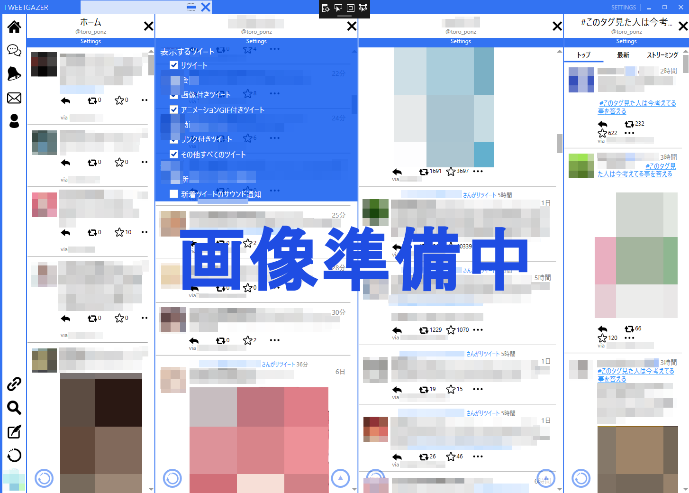

TweetGazer by とろゝ
概要
『TweetGazer by とろゝ』はWindows PC用のTwitterクライアントです。
ホームタイムラインだけでなく、リストや検索結果なども並べて表示できます。
動作環境
| ・プラットフォーム | Windows OSの動作するPC |
| ・OS | Windows 7以降 |
| ・必須コンポーネント | .NET Framework 4.6 |
ダウンロード・インストール
下記リンクからダウンロードし、解凍したフォルダを任意のディレクトリに配置してください。
TweetGazer.exeが実行ファイルです。
アンインストールはフォルダごと削除してください。
現在はアルファ版です。多くの不具合が存在しているため、利用は自己責任で行ってください。
開発にあたって、追加してほしい機能等を募集しています。このツイートにリプライしていただければ助かります。
TweetGazer ver.0.0.9 alpha ダウンロード
バージョン履歴
| ver.0.0.9 alpha | 左部メニュー(通知、メンション、検索)実装 |
| 画像を拡大できるように修正 | |
| ver.0.0.8 alpha | テザインの変更、安定化など |
| ver.0.0.5 alpha | 画像、GIFアニメーション、動画付きツイートに対応 |
| 引用ツイートのインライン表示実装 | |
| アイコン、ハッシュタグ等による疑似ページング機能追加 | |
| ver.0.0.4 alpha | デザインを修正 |
| URL・ハッシュタグ・リプライ時のスクリーンネームのハイパーリンクを表示 | |
| ver.0.0.3 alpha | いくつかの機能を追加 |
| ver.0.0.2 alpha | RTを解除した際に落ちる問題を修正 |
GitHub